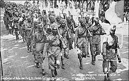

Until the independence of India, the "Indian Army" was a British-commanded force defined as "the force recruited locally and permanently based in India, together with its expatriate British officers"; the "British Army in India" referred to British Army units posted to India for a tour of duty. The "Army of India" meant the combined Indian Army and the British Army in India.

In 1776, a Military Department was created within the government of the East India Company at Kolkata. Its main function was to record orders that were issued to the army by various departments of the East India Company for the territories under its control.With the Charter Act of 1833, the Secretariat of the government of the East India Company was reorganised into four departments, including a Military Department. The army in the presidencies of Bengal, Bombay and Madras functioned as respective Presidency Armies until 1 April 1895, when they were unified into a single force known as the Indian Army.For administrative convenience, it was divided into four commands, namely Punjab (including the North West Frontier), Bengal, Madras (including Burma), and Bombay (including Sind, Quetta and Aden).The British Indian Army was a critical force for maintaining the primacy of the British Empire, both in India and throughout the world. Besides maintaining the internal security of the British Raj, the Army fought in many other theatres: the Anglo-Burmese Wars; the First and Second Anglo-Sikh wars; the First, Second, and Third Anglo-Afghan wars; the First and Second opium wars, and the Boxer Rebellion in China; and in Abyssinia.
The Kitchener Reforms brought the British Army to a new century.In the 20th century, the British Indian Army was a crucial adjunct to British forces in both world wars. 1.3 million Indian soldiers served in World War I (1914–1918) with the Allies, in which 74,187 Indian troops were killed or missing in action.In 1915 there was a mutiny by Indian soldiers in Singapore. The United Kingdom made promises of self-governance to the Indian National Congress in return for its support but reneged on them after the war, following which the Indian Independence movement gained strength.The "Indianisation" of the British Indian Army began with the formation of the Prince of Wales Royal Indian Military College at Dehradun, in March 1912, to provide education to the scions of aristocratic and well-to-do Indian families and to prepare selected Indian boys for admission into the Royal Military College, Sandhurst. Cadets were given a King's commission, after passing out, and were posted to one of the eight units selected for Indianisation. Because of the slow pace of Indianisation, with just 69 officers being commissioned between 1918 and 1932 , political pressure was applied, leading to the formation of the Indian Military Academy in 1932 and greater numbers of officers of Indian origin being commissioned.On the eve of World War II, the officer corps consisted of roughly 500 Indians holding regular commissions against approximately 3,000 British officers.In World War II Indian soldiers fought alongside the Allies. In 1939, British officials had no plan for expansion and training of Indian forces, which comprised about 130,000 men (in addition there were 44,000 men in British units in India in 1939), whose mission was internal security and defence against a possible Soviet threat through Afghanistan. As the war progressed, the size and role of the Indian Army expanded dramatically, and troops were sent to battlefronts as soon as possible. The most serious problem was the lack of equipment.Indian units served in Burma, wherein 1944–45, five Indian divisions were engaged along with one British and three African divisions. Even larger numbers operated in the Middle East. Some 87,000 Indian soldiers died in the war. By the end of the war, it had become the largest volunteer army in history, rising to over 2.5 million men in August 1945. In the African and Middle East campaigns, captured Indian troops were given a choice to join the German Army, to eventually "liberate" India from Great Britain, instead of being sent to POW camps. These men, along with Indian students who were in Germany when the war broke out, made up what was called the Free India Legion. They were originally intended as pathfinders for German forces in Asia but were soon sent to help guard the Atlantic Wall. Few who were part of the Free India Legion ever saw any combat, and very few were ever stationed outside Europe. At its height, the Free India Legion had over 3,000 troops in its ranks.Indian POWs also joined the Indian National Army, which was allied with the Empire of Japan. It was raised by a former colonel of the British Indian Army, General Mohan Singh, but was later led by Subhas Chandra Bose and Rash Bihari Bose. With the fall of Singapore in 1942, about 40,000 Indian soldiers were captured. When given the choice, over 30,000 joined the Indian National Army. Those who refused became POWs and were mostly shipped to New Guinea initial success, this army was defeated , along with the Japanese; but it had a huge impact on the Indian independence movement.